Diving the HTMS Sattakut: By dive boat out to the HTMS Sattakut, a former US Navy landing craft from the Second World War that later served in the Thai navy and was sunk off Koh Tao in 2011 as an artificial reef. Today the hull at around 30 m is covered in coral, the gun on the bow is still visible, and huge schools of fish swirl around it.
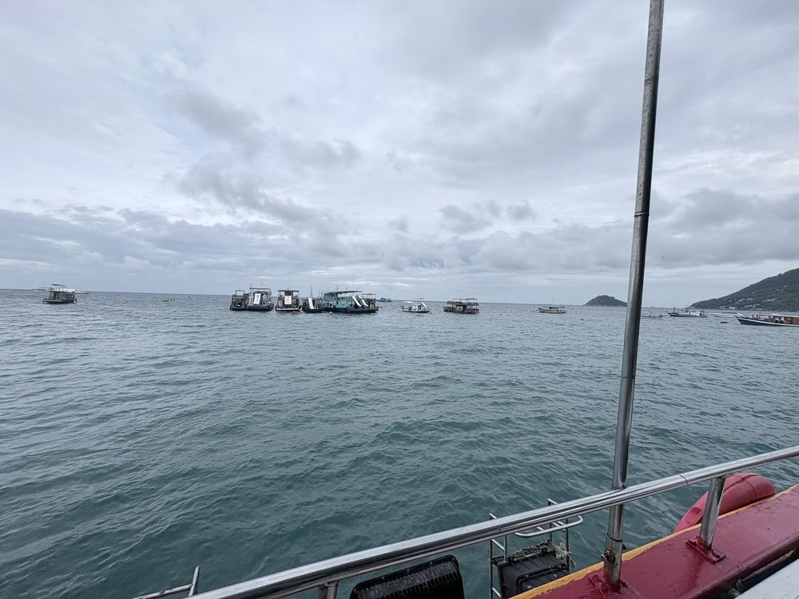
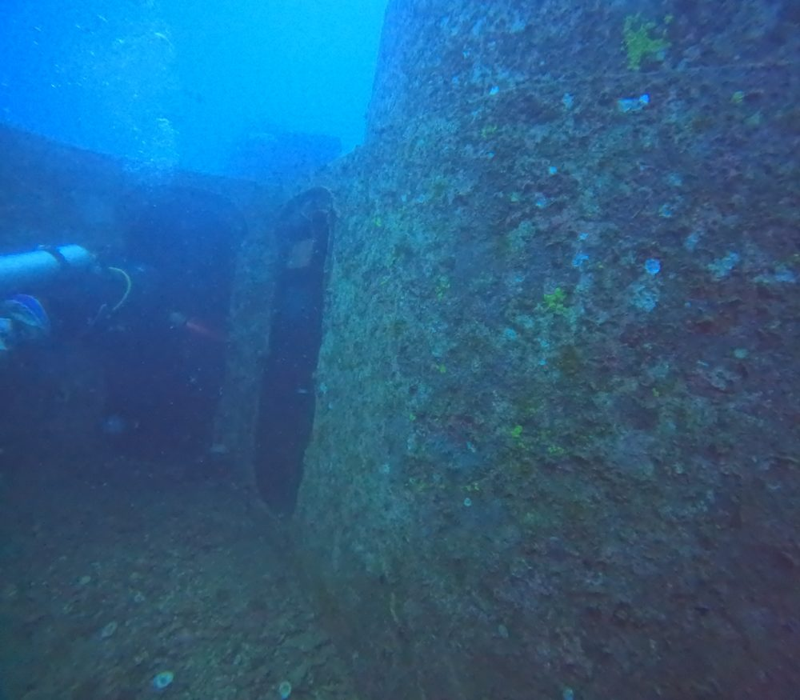
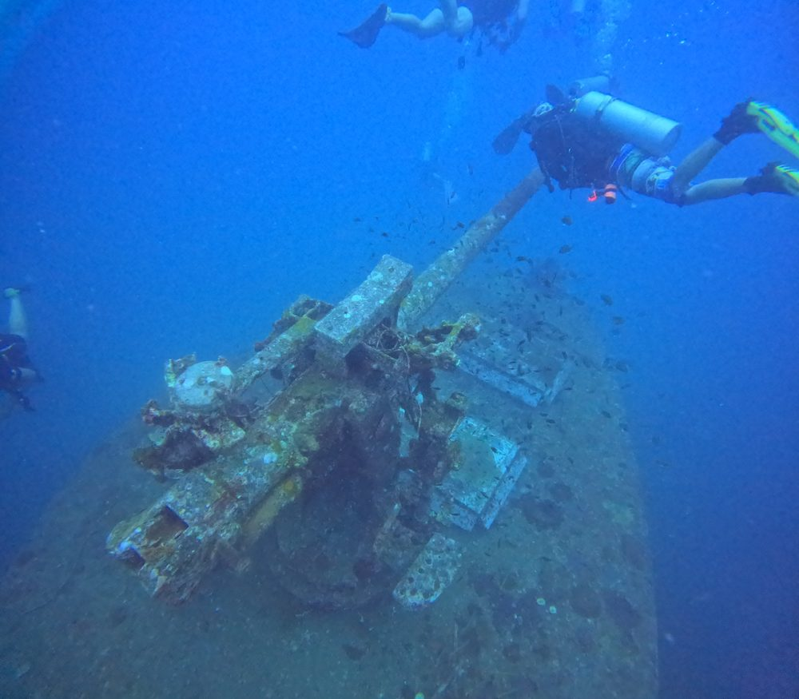
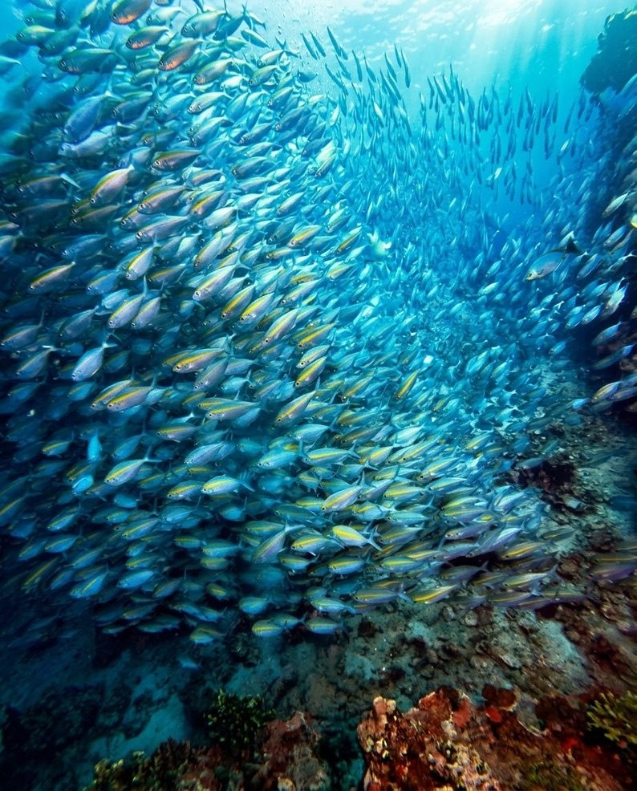
Sairee by night: In the evening on Sairee Beach: fairy lights and lanterns in the trees, tables right on the sand, bars in white grottoes.
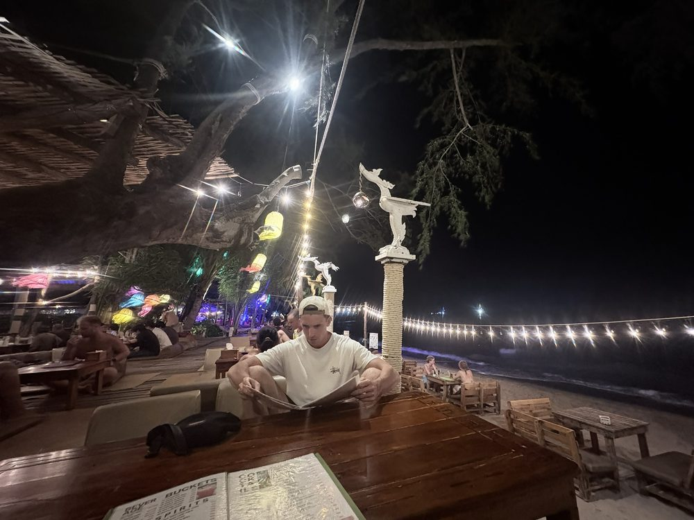
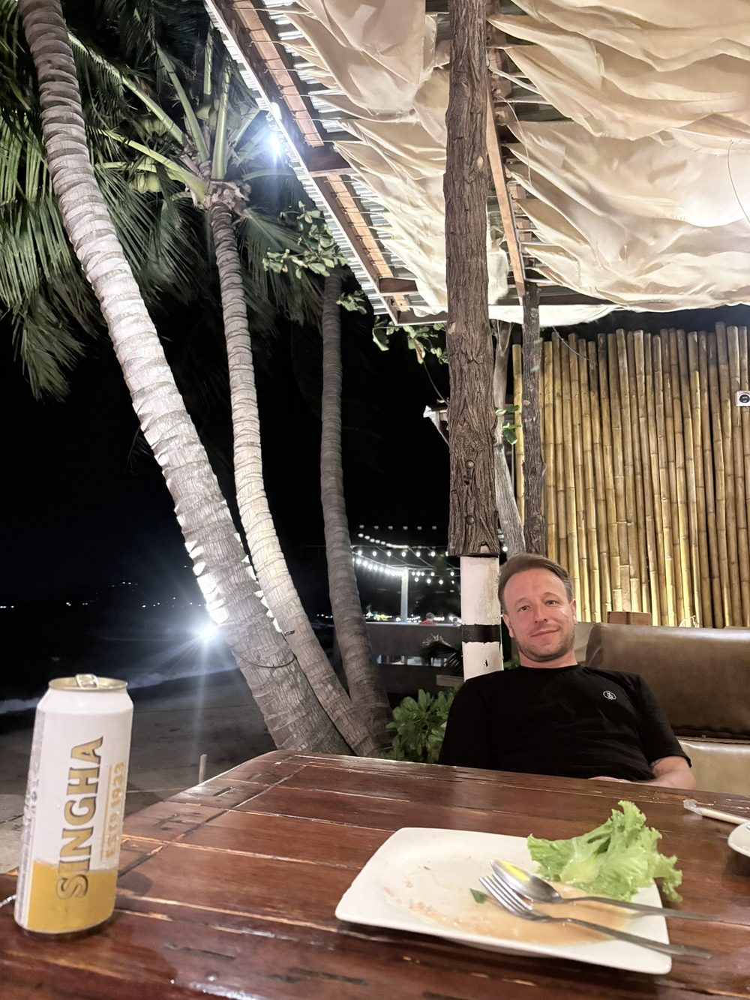
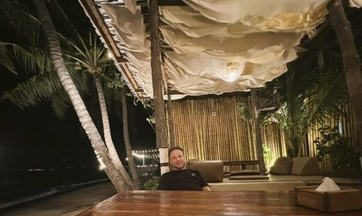
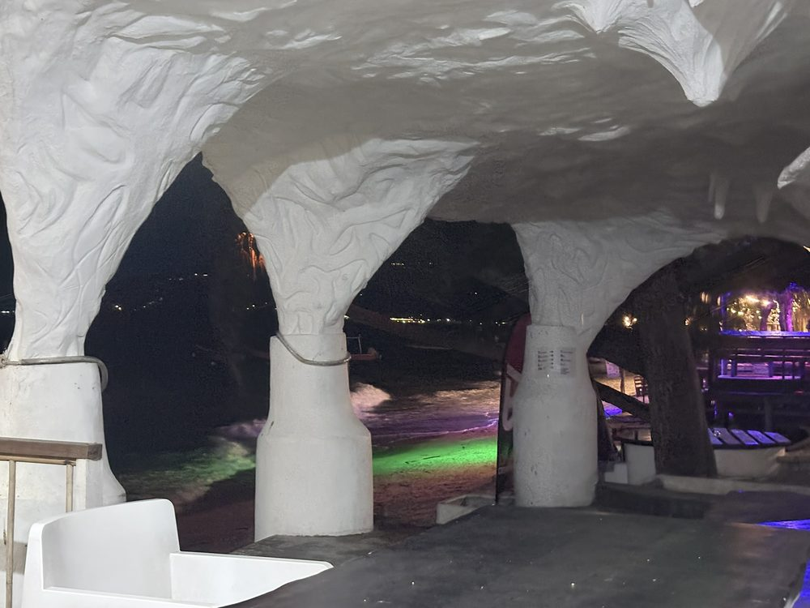
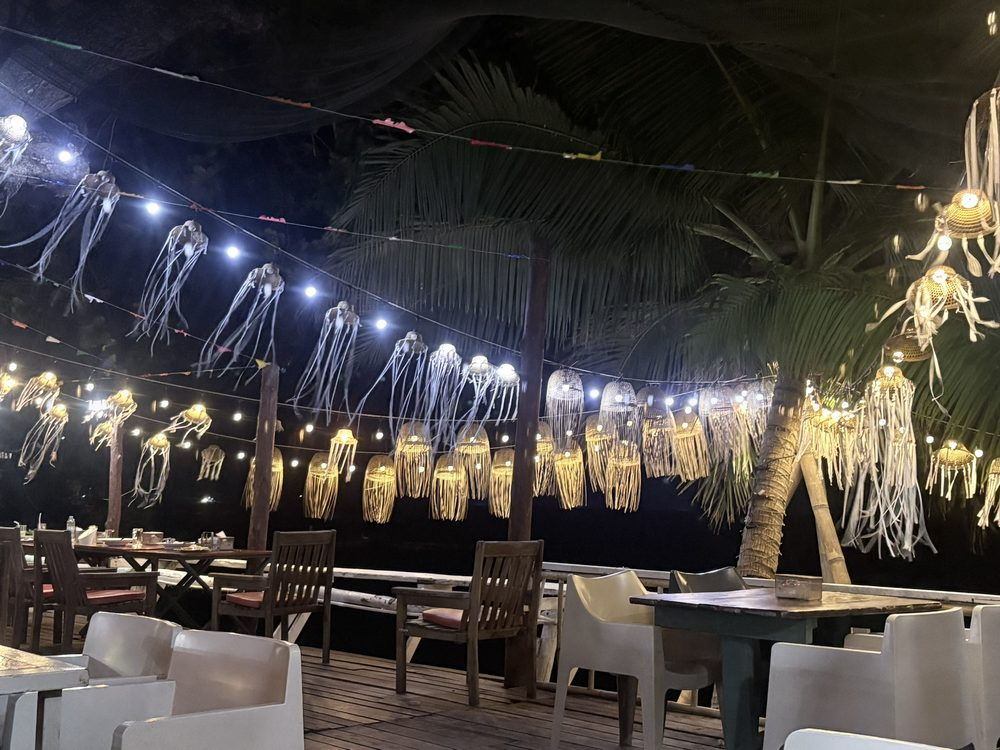
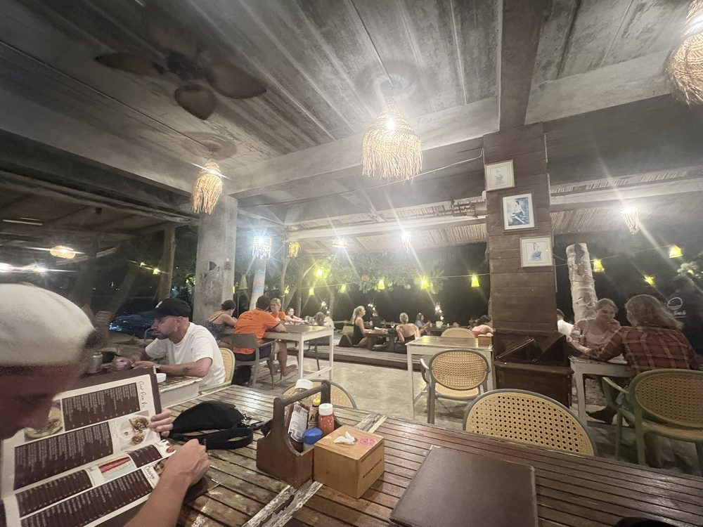
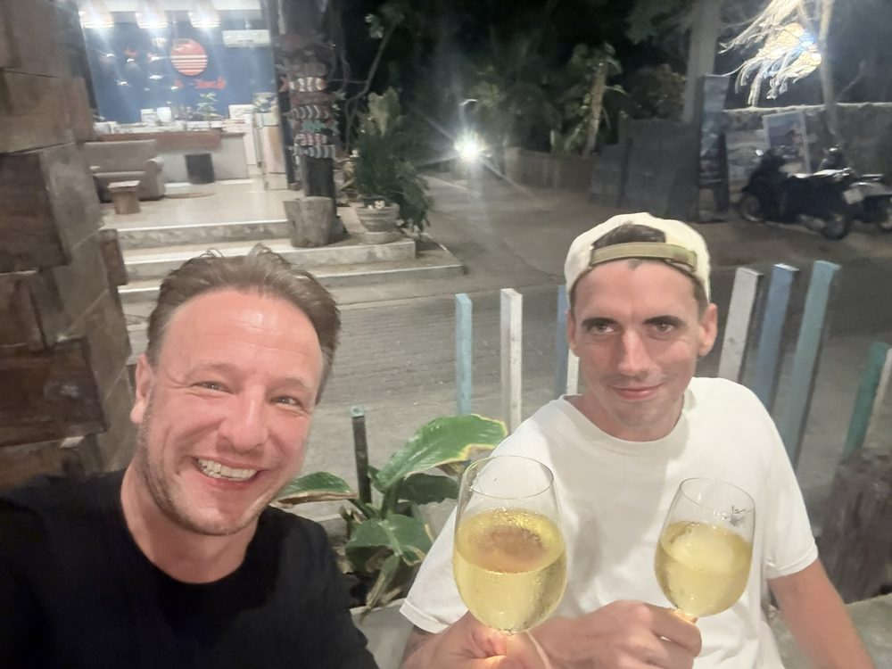
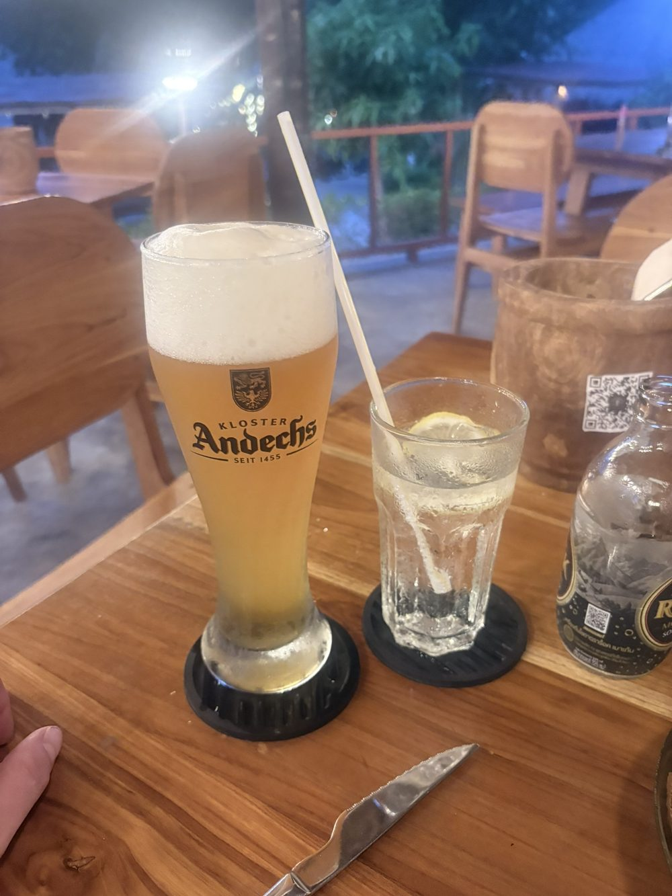